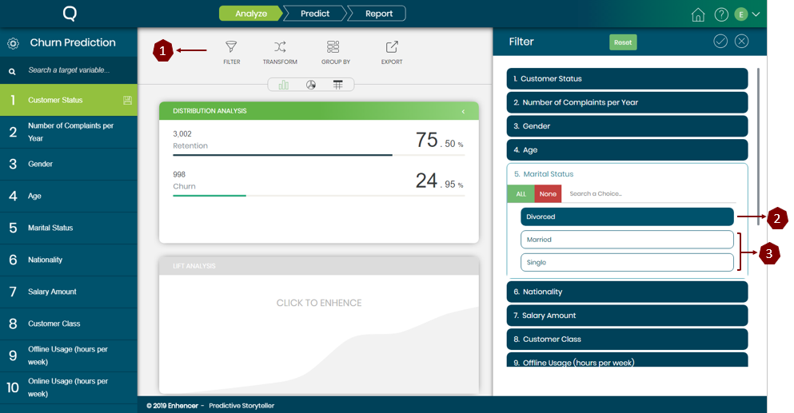

In order to filter specific choices from the target variable Filter task can be used. Upon clinking the filter task a popup window will appear providing the option to filter the target variable as the user sees fit.
After filtering desired choices hit the tick button to update your analysis. After filtering lets see the output. In this example we are filtering to see only the customers who are divorced and their churn proportion. Once the filtering is done the results in the middle panel should update like the picture below;

Interpretation:
The overall churn rate in the population is 24.95% and we are trying to observe what is the churn rate for
the customers who are divorced. After filtering the data, it seems like the churn rate is 22.75% for the
customers who are divorced which is lower than the overall population.
This is how filter can actually be used in analysis phase and how it should be interpreted.